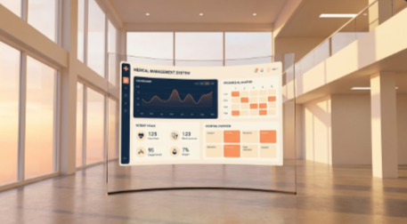
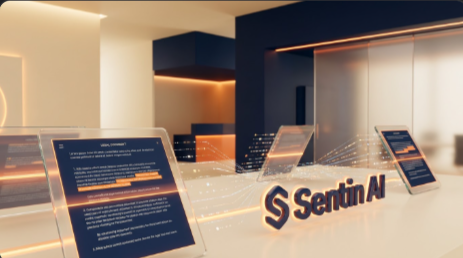
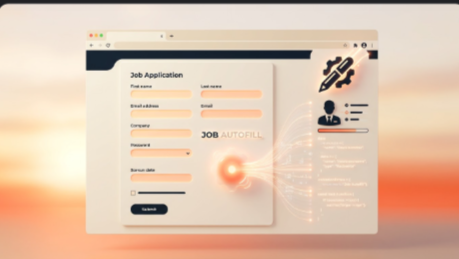
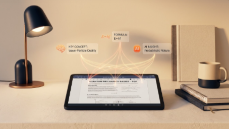

      <!-- SECTION 2: PROJECTS -->
      <section id="projects">
        <div class="container">
          <div class="section-header">
            <span class="section-subtitle">Featured Work</span>
            <h2 class="section-title">Projects<span>.</span></h2>
          </div>

          <div class="belt" data-belt>
            <!-- Prev Arrow -->
            <button class="belt-arrow belt-prev" aria-label="Previous project">
              <svg viewBox="0 0 24 24" width="22" height="22" fill="none" stroke="currentColor" stroke-width="2.5"><path d="M15 18l-6-6 6-6" stroke-linecap="round" stroke-linejoin="round"/></svg>
            </button>

            <!-- Belt viewport — clips the drifting cards; JS positions every card -->
            <div class="belt-viewport" tabindex="0" role="region" aria-label="Projects carousel — drag, or use the left and right arrow keys, to browse">

              <article class="belt-card" data-index="0">
                <div class="project-image-side">
                  
                </div>
                <div class="project-details-side">
                  <span class="project-category">Healthcare AI</span>
                  <h3 class="project-title">Medical Management System</h3>
                  <p class="project-desc">A course project in polyglot plumbing: a Java Swing app for patient records that shells out to Python for analytics and charts. No database — everything lives in memory while it runs.</p>
                  <div class="project-tech">
                    <span class="tech-tag">Java Swing</span>
                    <span class="tech-tag">Python</span>
                    <span class="tech-tag">Matplotlib</span>
                    <span class="tech-tag">ProcessBuilder</span>
                  </div>
                  <a href="https://github.com/raiyan979/hospital-GUI" target="_blank" class="project-link">View Code <svg viewBox="0 0 24 24" width="14" height="14" fill="none" stroke="currentColor" stroke-width="2.5"><line x1="7" y1="17" x2="17" y2="7" stroke-linecap="round" stroke-linejoin="round"/><polyline points="7 7 17 7 17 17" stroke-linecap="round" stroke-linejoin="round"/></svg></a>
                </div>
              </article>

              <article class="belt-card" data-index="1">
                <div class="project-image-side">
                  
                </div>
                <div class="project-details-side">
                  <span class="project-category">AI Language Agent</span>
                  <h3 class="project-title">Lexiq</h3>
                  <p class="project-desc">The project I have put the most into. A French-learning desktop app that runs entirely offline with spaced-repetition review and generated pronunciation audio across 32 units. Built with Tauri and Svelte.</p>
                  <div class="project-tech">
                    <span class="tech-tag">Tauri 2</span>
                    <span class="tech-tag">Svelte 5</span>
                    <span class="tech-tag">TypeScript</span>
                    <span class="tech-tag">SQLite</span>
                    <span class="tech-tag">FSRS</span>
                  </div>
                  <a href="https://github.com/raiyan979/lexiq-app" target="_blank" class="project-link">View Code <svg viewBox="0 0 24 24" width="14" height="14" fill="none" stroke="currentColor" stroke-width="2.5"><line x1="7" y1="17" x2="17" y2="7" stroke-linecap="round" stroke-linejoin="round"/><polyline points="7 7 17 7 17 17" stroke-linecap="round" stroke-linejoin="round"/></svg></a>
                </div>
              </article>

              <article class="belt-card" data-index="2">
                <div class="project-image-side">
                  
                </div>
                <div class="project-details-side">
                  <span class="project-category">TELUS AI Hackathon</span>
                  <h3 class="project-title">Sentin AI</h3>
                  <p class="project-desc">Built in 24 hours at the TELUS AI Hackathon. A Chrome side-panel extension that reads terms of service on any page and flags clauses quietly signing away your privacy or data.</p>
                  <div class="project-tech">
                    <span class="tech-tag">JavaScript</span>
                    <span class="tech-tag">Chrome SidePanel API</span>
                    <span class="tech-tag">GPT-4o-mini</span>
                    <span class="tech-tag">Gemini API</span>
                  </div>
                  <a href="#" class="project-link">View Details <svg viewBox="0 0 24 24" width="14" height="14" fill="none" stroke="currentColor" stroke-width="2.5"><line x1="7" y1="17" x2="17" y2="7" stroke-linecap="round" stroke-linejoin="round"/><polyline points="7 7 17 7 17 17" stroke-linecap="round" stroke-linejoin="round"/></svg></a>
                </div>
              </article>

              <article class="belt-card" data-index="3">
                <div class="project-image-side">
                  
                </div>
                <div class="project-details-side">
                  <span class="project-category">Computer Vision</span>
                  <h3 class="project-title">Sign Language Interpreter</h3>
                  <p class="project-desc">Translates sign language to text from a live webcam. MediaPipe tracks hand landmarks, and an LSTM trained on short gesture sequences classifies letters and phrases.</p>
                  <div class="project-tech">
                    <span class="tech-tag">Python</span>
                    <span class="tech-tag">MediaPipe</span>
                    <span class="tech-tag">TensorFlow</span>
                    <span class="tech-tag">OpenCV</span>
                    <span class="tech-tag">Tkinter</span>
                  </div>
                  <a href="https://github.com/raiyan979/sign-language-interpreter" target="_blank" class="project-link">View Code <svg viewBox="0 0 24 24" width="14" height="14" fill="none" stroke="currentColor" stroke-width="2.5"><line x1="7" y1="17" x2="17" y2="7" stroke-linecap="round" stroke-linejoin="round"/><polyline points="7 7 17 7 17 17" stroke-linecap="round" stroke-linejoin="round"/></svg></a>
                </div>
              </article>

              <article class="belt-card" data-index="4">
                <div class="project-image-side">
                  
                </div>
                <div class="project-details-side">
                  <span class="project-category">Browser Automation</span>
                  <h3 class="project-title">Job Autofill</h3>
                  <p class="project-desc">Fills out job applications so you do not retype the same details on every portal. A desktop app built with Next.js and Electron that maps form fields to a saved profile.</p>
                  <div class="project-tech">
                    <span class="tech-tag">Next.js</span>
                    <span class="tech-tag">TypeScript</span>
                    <span class="tech-tag">Electron</span>
                    <span class="tech-tag">Tailwind CSS</span>
                  </div>
                  <a href="https://github.com/raiyan979/jobautofill" target="_blank" class="project-link">View Code <svg viewBox="0 0 24 24" width="14" height="14" fill="none" stroke="currentColor" stroke-width="2.5"><line x1="7" y1="17" x2="17" y2="7" stroke-linecap="round" stroke-linejoin="round"/><polyline points="7 7 17 7 17 17" stroke-linecap="round" stroke-linejoin="round"/></svg></a>
                </div>
              </article>

              <article class="belt-card" data-index="5">
                <div class="project-image-side">
                  
                </div>
                <div class="project-details-side">
                  <span class="project-category">EdTech AI</span>
                  <h3 class="project-title">Study AI</h3>
                  <p class="project-desc">Point it at your notes, a PDF, or a screenshot and it hands back a quiz or practice exam. A small web app wired to the Gemini API.</p>
                  <div class="project-tech">
                    <span class="tech-tag">JavaScript</span>
                    <span class="tech-tag">Gemini API</span>
                    <span class="tech-tag">Tailwind CSS</span>
                  </div>
                  <a href="https://github.com/raiyan979/study-ai" target="_blank" class="project-link">View Code <svg viewBox="0 0 24 24" width="14" height="14" fill="none" stroke="currentColor" stroke-width="2.5"><line x1="7" y1="17" x2="17" y2="7" stroke-linecap="round" stroke-linejoin="round"/><polyline points="7 7 17 7 17 17" stroke-linecap="round" stroke-linejoin="round"/></svg></a>
                </div>
              </article>

            </div><!-- /.belt-viewport -->

            <!-- Next Arrow -->
            <button class="belt-arrow belt-next" aria-label="Next project">
              <svg viewBox="0 0 24 24" width="22" height="22" fill="none" stroke="currentColor" stroke-width="2.5"><path d="M9 18l6-6-6-6" stroke-linecap="round" stroke-linejoin="round"/></svg>
            </button>

            <!-- Controls: pause/play + navigation dots -->
            <div class="belt-controls">
              <button class="belt-pause" aria-label="Pause auto-scroll" aria-pressed="false">
                <svg viewBox="0 0 24 24" width="14" height="14" fill="currentColor" aria-hidden="true"><rect x="6" y="5" width="4" height="14" rx="1"/><rect x="14" y="5" width="4" height="14" rx="1"/></svg><span>Pause</span>
              </button>
              <div class="belt-dots" role="group" aria-label="Jump to a project">
                <button class="belt-dot active" data-goto="0" aria-label="Go to project 1"></button>
                <button class="belt-dot" data-goto="1" aria-label="Go to project 2"></button>
                <button class="belt-dot" data-goto="2" aria-label="Go to project 3"></button>
                <button class="belt-dot" data-goto="3" aria-label="Go to project 4"></button>
                <button class="belt-dot" data-goto="4" aria-label="Go to project 5"></button>
                <button class="belt-dot" data-goto="5" aria-label="Go to project 6"></button>
              </div>
            </div>
          </div><!-- /.belt -->
        </div>
      </section>
